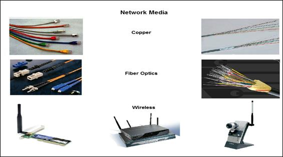
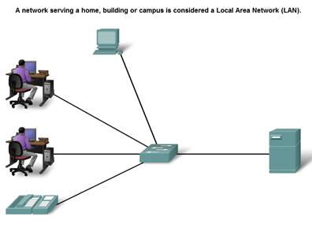
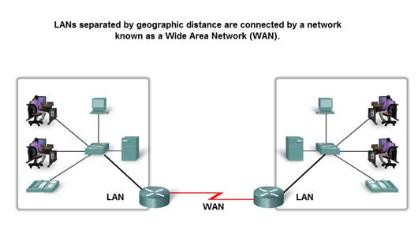
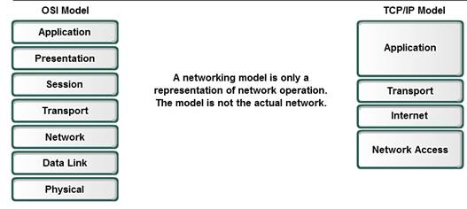
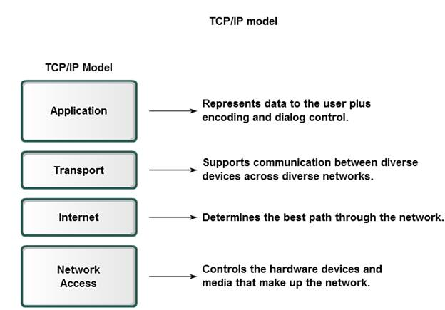
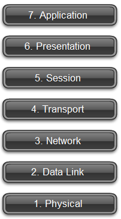

The Network Architectures
Fault Tolerance
The expectation that the Internet is always available to the millions of users who rely on it requires a network architecture that is designed and built to be fault tolerant. A fault tolerant network is one that limits the impact of a hardware or software failure and can recover quickly when such a failure occurs. These networks depend on redundant links, or paths, between the source and destination of a message. If one link or path fails, processes ensure that messages can be instantly routed over a different link transparent to the users on either end. Both the physical infrastructures and the logical processes that direct the messages through the network are designed to accommodate this redundancy. This is a basic premise of the architecture of current networks.
Scalability
A scalable network can expand quickly to support new users and applications without impacting the performance of the service being delivered to existing users. Thousands of new users and service providers connect to the Internet each week. The ability of the network to support these new interconnections depends on a hierarchical layered design for the underlying physical infrastructure and logical architecture. The operation at each layer enables users or service providers to be inserted without causing disruption to the entire network. Technology developments are constantly increasing the message carrying capabilities and performance of the physical infrastructure components at every layer. These developments, along with new methods to identify and locate individual users within an internetwork, are enabling the Internet to keep pace with user demand.
Quality of Service (QoS)
The Internet is currently providing an acceptable level of fault tolerance and scalability for its users. But new applications available to users over internetworks create higher expectations for the quality of the delivered services. Voice and live video transmissions require a level of consistent quality and uninterrupted delivery that was not necessary for traditional computer applications. Quality of these services is measured against the quality of experiencing the same audio or video presentation in person. Traditional voice and video networks are designed to support a single type of transmission, and are therefore able to produce an acceptable level of quality. New requirements to support this quality of service over a converged network are changing the way network architectures are designed and implemented.
Security
The Internet has evolved from a tightly controlled internetwork of educational and government organizations to a widely accessible means for transmission of business and personal communications. As a result, the security requirements of the network have changed. The security and privacy expectations that result from the use of internetworks to exchange confidential and business critical information exceed what the current architecture can deliver. Rapid expansion in communication areas that were not served by traditional data networks is increasing the need to embed security into the network architecture. As a result, much effort is being devoted to this area of research and development. In the meantime, many tools and procedures are being implemented to combat inherent security flaws in the network architecture.
___________________________________________________________
___________________________________________________________
A Fault Tolerant network Architecture
Circuit Switched Connection-oriented Networks
To understand the challenge that the DoD researchers were faced with, it is necessary to look at how early telephone systems work. When a person makes a call using a traditional telephone set, the call first goes through a setup process, where all of the telephone switching locations between the person and the phone set that they are calling are identified. A temporary path, or circuit, is created through the various switching locations to use for the duration of the telephone call. If any link or device participating in the circuit fails, the call is dropped. To reconnect, a new call must be made, and a new circuit created between the source telephone set and the destination. This type of connection-oriented network is called a circuit-switched network. Early circuit switched networks did not dynamically recreate dropped circuits. In order to recover from failure, new calls had to be initiated and new circuits built end-to-end.
Packet Switched Connectionless Networks
In the search for a network that could withstand the loss of a significant amount of its transmission and switching facilities, the early Internet designers reevaluated early research regarding packet switched networks. The premise for this type of networks is that a single message can be broken into multiple message blocks. Individual blocks containing addressing information indicates both their origination point and their final destination. Using this embedded information, these message blocks, called packets, can be sent through the network along various paths, and can be reassembled into the original message upon reaching their destination.
Utilizing Packets
The devices within the network itself are unaware of the content of the individual packets, only visible is the address of the final destination and the next device in the path to that destination. No reserved circuit is built between sender and receiver. Each packet is sent independently from one switching location to another. At each location, a routing decision is made as to which path to use to forward the packet towards its final destination. If a previously used path is no longer available, the routing function can dynamically choose the next best available path. Because the messages are sent in pieces, rather than as a single complete message, the few packets that may be lost in the advent of a failure can be retransmitted to the destination along a different path. In many cases, the destination device is unaware that any failure or rerouting has occurred.
Packet-switched Connectionless Networks
The DoD researchers realized that a packet switched connectionless network had the features necessary to support a resilient, fault tolerant network architecture. The need for a single, reserved circuit from end-to-end does not exist in a packet switched network. Any piece of a message can be sent through the network using any available path. Packets containing pieces of messages from different sources can travel the network at the same time. The problem of underutilized or idle circuits is eliminated -- all available resources can be used at any time to deliver packets to their final destination. By providing a method to dynamically use redundant paths, without intervention by the user, the Internet has become a fault tolerant, scalable method of communications.
Connection-oriented Networks
Although packet-switched connectionless networks met the needs of the DoD, and continue to be the primary infrastructure for today's Internet, there are some benefits to a connection-oriented system like the circuit-switched telephone system. Because resources at the various switching locations are dedicated to providing a finite number of circuits, the quality and consistency of messages transmitted across a connection-oriented network can be guaranteed. Another benefit is that the provider of the service can charge the users of the network for the period of time that the connection is active. The ability to charge users for active connections through the network is a fundamental premise of the telecommunication service industry.
___________________________________________________________
___________________________________________________________
The Elements of Communication
Communication begins with a message, or information, that must be sent from one individual or device to another. People exchange ideas using many different communication methods. All of these methods have three elements in common. The first of these elements is the message source, or sender. Message sources are people, or electronic devices, that need to send a message to other individuals or devices. The second element of communication is the destination, or receiver, of the message. The destination receives the message and interprets it. A third element, called a channel, consists of the media that provides the pathway over which the message can travel from source to destination.
Consider, for example, the desire to communicate using words, pictures, and sounds. Each of these messages can be sent across a data or information network by first converting them into binary digits, or bits. These bits are then encoded into a signal that can be transmitted over the appropriate medium. In computer networks, the media is usually a type of cable, or a wireless transmission.
The term network in this course will refer to data or information networks capable of carrying many different types of communications, including traditional computer data, interactive voice, video, and entertainment products.
__________________________________________________________
___________________________________________________________
Network Media
Communication across a network is carried on a medium. The medium provides the channel over which the message travels from source to destination.
Modern networks primarily use three types of media to interconnect devices and to provide the pathway over which data can be transmitted. These media are:
· Metallic wires within cables
· Glass or plastic fibers (fiber optic cable)
· Wireless transmission
The signal encoding that must occur for the message to be transmitted is different for each media type. On metallic wires, the data is encoded into electrical impulses that match specific patterns. Fiber optic transmissions rely on pulses of light, within either infrared or visible light ranges. In wireless transmission, patterns of electromagnetic waves depict the various bit values.
Different types of network media have different features and benefits. Not all network media has the same characteristics and is appropriate for the same purpose. Criteria for choosing a network media are:
· The distance the media can successfully carry a signal.
· The environment in which the media is to be installed.
· The amount of data and the speed at which it must be transmitted.
· The cost of the media and installation
Local Area Network
Networks infrastructures can vary greatly in terms of:
· The size of the area covered
· The number of users connected
· The number and types of services available
An individual network usually spans a single geographical area, providing services and applications to people within a common organizational structure, such as a single business, campus or region. This type of network is called a Local Area Network (LAN). A LAN is usually administered by a single organization. The administrative control that governs the security and access control policies are enforced on the network level.
_____________________________________________________________________________________
_____________________________________________________________________________________
Wide Area Network
When a company or organization has locations that are separated by large geographical distances, it may be necessary to use a telecommunications service provider (TSP) to interconnect the LANs at the different locations. Telecommunications service providers operate large regional networks that can span long distances. Traditionally, TSPs transported voice and data communications on separate networks. Increasingly, these providers are offering converged information network services to their subscribers.
WANs use specifically designed network devices to make the interconnections between LANs. Because of the importance of these devices to the network, configuring, installing and maintaining these devices are skills that are integral to the function of an organization's network.
___________________________________________________________
Networks of a Networks
Although there are benefits to using a LAN or WAN, most of us need to communicate with a resource on another network, outside of our local organization.
· Examples of this type of communication include:
· Sending an e-mail to a friend in another country
· Accessing news or products on a website
· Getting a file from a neighbor's computer
· Instant messaging with a relative in another city
· Following a favorite sporting team's performance on a cell phone
Internetwork
A global mesh of interconnected networks (internetworks) meets these human communication needs. Some of these interconnected networks are owned by large public and private organizations, such as government agencies or industrial enterprises, and are reserved for their exclusive use. The most well-known and widely used publicly-accessible internetwork is the Internet.
The Internet is created by the interconnection of networks belonging to Internet Service Providers (ISPs). These ISP networks connect to each other to provide access for millions of users all over the world. Ensuring effective communication across this diverse infrastructure requires the application of consistent and commonly recognized technologies and protocols as well as the cooperation of many network administration agencies.
Intranet
The term intranet is often used to refer to a private connection of LANs and WANs that belongs to an organization, and is designed to be accessible only by the organization's members, employees, or others with authorization.
Note: The following terms may be interchangeable: internetwork, data network, and network. A connection of two or more data networks forms an internetwork - a network of networks. It is also common to refer to an internetwork as a data network - or simply as a network - when considering communications at a high level. The usage of terms depends on the context at the time and terms may often be interchanged
___________________________________________________________
___________________________________________________________
Protocol and Reference Models
There are two basic types of networking models:
· protocol models and
· reference models.
A protocol model provides a model that closely matches the structure of a particular protocol suite. The hierarchical set of related protocols in a suite typically represents all the functionality required to interface the human network with the data network. The TCP/IP model is a protocol model because it describes the functions that occur at each layer of protocols within the TCP/IP suite.
A reference model provides a common reference for maintaining consistency within all types of network protocols and services. A reference model is not intended to be an implementation specification or to provide a sufficient level of detail to define precisely the services of the network architecture. The primary purpose of a reference model is to aid in clearer understanding of the functions and process involved.
The Open Systems Interconnection (OSI) model is the most widely known internetwork reference model. It is used for data network design, operation specifications, and troubleshooting.
Although the TCP/IP and OSI models are the primary models used when discussing network functionality, designers of network protocols, services, or devices can create their own models to represent their products. Ultimately, designers are required to communicate to the industry by relating their product or service to either the OSI model or the TCP/IP model, or to both.
___________________________________________________________
The TCP/IP Model
The first layered protocol model for internetwork communications was created in the early 1970s and is referred to as the Internet model. It defines four categories of functions that must occur for communications to be successful. The architecture of the TCP/IP protocol suite follows the structure of this model. Because of this, the Internet model is commonly referred to as the TCP/IP model.
Most protocol models describe a vendor-specific protocol stack. However, since the TCP/IP model is an open standard, one company does not control the definition of the model. The definitions of the standard and the TCP/IP protocols are discussed in a public forum and defined in a publicly-available set of documents. These documents are called Requests for Comments (RFCs). They contain both the formal specification of data communications protocols and resources that describe the use of the protocols.
The RFCs also contain technical and organizational documents about the Internet, including the technical specifications and policy documents produced by the Internet Engineering Task Force (IETF)
______________________________________________________________________________
The Communication Process
The TCP/IP model describes the functionality of the protocols that make up the TCP/IP protocol suite. These protocols, which are implemented on both the sending and receiving hosts, interact to provide end-to-end delivery of applications over a network.
A complete communication process includes these steps:
1. Creation of data at the application layer of the originating source end device
2. Segmentation and encapsulation of data as it passes down the protocol stack in the source end device
3. Generation of the data onto the media at the network access layer of the stack
4. Transportation of the data through the internetwork, which consists of media and any intermediary devices
5. Reception of the data at the network access layer of the destination end device
6. Decapsulation and reassembly of the data as it passes up the stack in the destination device
7. Passing this data to the destination application at the Application layer of the destination end device
___________________________________________________________
Protocols Data Units and Encapsulation
As application data is passed down the protocol stack on its way to be transmitted across the network media, various protocols add information to it at each level. This is commonly known as the encapsulation process.
The form that a piece of data takes at any layer is called a Protocol Data Unit (PDU). During encapsulation, each succeeding layer encapsulates the PDU that it receives from the layer above in accordance with the protocol being used. At each stage of the process, a PDU has a different name to reflect its new appearance. Although there is no universal naming convention for PDUs, in this course, the PDUs are named according to the protocols of the TCP/IP suite.
Data - The general term for the PDU used at the Application layer
Segment - Transport Layer PDU
Packet - Internetwork Layer PDU
Frame - Network Access Layer PDU
Bits - A PDU used when physically transmitting data over the medium
___________________________________________________________
___________________________________________________________
The OSI Model
Initially the OSI model was designed by the International Organization for Standardization (ISO) to provide a framework on which to build a suite of open systems protocols. The vision was that this set of protocols would be used to develop an international network that would not be dependent on proprietary systems.
Unfortunately, the speed at which the TCP/IP based Internet was adopted, and the rate at which it expanded, caused the OSI Protocol Suite development and acceptance to lag behind. Although few of the protocols developed using the OSI specifications are in widespread use today, the seven-layer OSI model has made major contributions to the development of other protocols and products for all types of new networks.
As a reference model, the OSI model provides an extensive list of functions and services that can occur at each layer. It also describes the interaction of each layer with the layers directly above and below it. Although the content of this course will be structured around the OSI Model the focus of discussion will be the protocols identified in the TCP/IP protocol stack.
Note that whereas the TCP/IP model layers are referred to only by name, the seven OSI model layers are more often referred to by number than by name.

___________________________________________________________